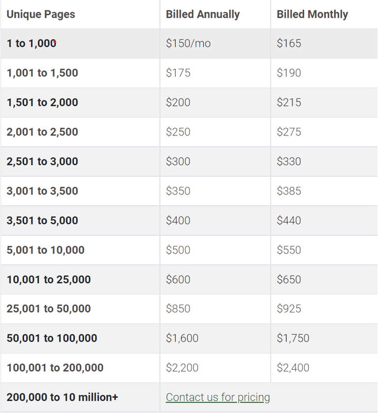

Top 5 Awesome Web Accessibility Testing Tools for Websites
The quality of the tools you use defines the speed with which you can diagnose and resolve problems. Each year the landscape changes dramatically in web technologies, and of late the tooling for accessibility is no exception.
Accessibility testing is about ensuring that a website is easily accessible to everyone. And by “everyone” we mean people with disabilities, aged individuals or anyone who belongs to the disadvantaged group.
A standard web accessibility testing tool conducts thorough website testing to generate comprehensive reports on the current accessibility status of the tool. These tools further suggest proper fixes and recommendations to resolve these accessibility issues.
This blog will list the top 5 web accessibility testing tools for you to ensure that your website is ready for everyone’s usage.
Accessibility Tools/Extensions/Software for Quick Accessibility Check of your Website
Here are the top 5 web accessibility tools and extensions to perform a quick accessibility check of your website:
1. Dynomapper
The first name on our best web accessibility testing tools list is Dynomapper. It allows you to test the accessibility of any website or app. The best part is that users can witness the live accessibility test within the browser itself with the “visualize” feature of Dynomapper. Additionally, Dynomap also generates comprehensive online accessibility test reports for the users’ easy understanding.
Top Features:
* Dynomapper can test HTML content and can easily create sitemaps irrespective of the URL
* Dynomapper’s powerful Crawler can arrange links and subdomains within minutes
* Dynomapper has outstanding customization features. It lets you personalize the sitemaps with colours for convenience
* Dynomapper can also import XML files for generating sitemaps
Pricing
Starter plan – $64/month
Standard plan – $129/month
Organization plan – $399/month
2. WAVE
WAVE is a web accessibility evaluation tool that assists websites in creating accessible content. WAVE evaluates website content based on the WCAG guidelines and also conducts the manual evaluation of existing website content to point out all loopholes that could affect accessibility. From unlimited automated scanning to generating consolidated reports, WAVE does it all to help you scale.
Top Features:
* WAVE evaluates the accessibility of web pages by annotating the web page copy
* WAVE conducts the accessibility evaluation within the browser. It doesn’t save any data on the server.
* WAVE not only checks accessibility but suggests some recommendations to the users for fixing the accessibility issues.
Pricing
WAVE charges the users based on the number of pages you are checking. Here is the detailed pricing chart for WAVE:

3. Cynthia Says
Cynthia Says is another web accessibility checker on our list that assists users in identifying the accessibility compliance issues within your website. You can test each individual page of a website with this tool to find out the web accessibility errors and get consolidated and comprehensive feedback. The whole idea of launching Cynthia Says web accessibility checker was to increase the awareness of the community on accessibility testing and its significance.
Top Features:
* Cynthia Says evaluates the accessibility of your website based on WCAG 1.0 compliance
* Cynthia Says evaluates the accessibility of your website based on WCAG 1.0 compliance
* It is a pretty old web accessibility tool and has not yet been updated for WCAG 2.0 testing
Pricing
Free
4. LERA
LERA is a cutting-edge Chrome extension
to perform the web accessibility audit of your web pages. It generates a granular, downloadable report that highlights various accessibility issues and the relevant fixes. Based on axe core it comes with a highly vetted industry rule engine to evaluate the accessibility status of your web applications. An advanced automated workflow conducts the website audit based on WCAG 2.1, Level A and AA success criteria and generates a report within minutes.
Top Features:
* Fast automated and manual accessibility testing for individual web pages
* A comprehensive, granular report that highlights the key accessibility issues and fixes
* Advanced testing and WCAG 2.1, Level A and AA compliant
Pricing: Free. LERA is the only web accessibility tool in our list that performs automated accessibility audits and generates a downloadable accessibility report in Excel for free.
5. SortSite
The next top web accessibility testing tool on our list is SortSite. You can use it as a web or desktop application on your Windows or Mac system. SortSite can evaluate your entire website and focus on major checkpoints like accessibility, compatibility, broken links, SEO, and usability with one simple click.
Top Features:
* SortSite evaluates websites based on WCAG 2.0, and 110 checkpoints.
* SortSite is compatible with both Windows and Mac OS. You can use it as a desktop app, desktop browser and mobile browser.
* SortSite can evaluate the HTTP error codes instantly
* The best part about SortSite is that you can purchase it one time and use for a lifetime
Pricing
Standard – $149 for a single user license
Professional – $349 for a single user license
Developer – $849 for a single user license
Summary
Web accessibility testing tools are extremely helpful in ensuring a website is compliant with the necessary standards and regulations. They allow developers to test for various issues and assistive technologies, making it easier to identify potential problems.
Web accessibility tools for developers are essential for creating digital experiences that are inclusive and usable by people with disabilities. These tools help developers identify and address accessibility issues in websites and applications.
Remember, while these tools are valuable for automated testing, manual testing and consideration of user experience are also crucial for achieving comprehensive web accessibility. It's important to stay updated with the latest accessibility guidelines and best practices to ensure that digital experiences are accessible to everyone.